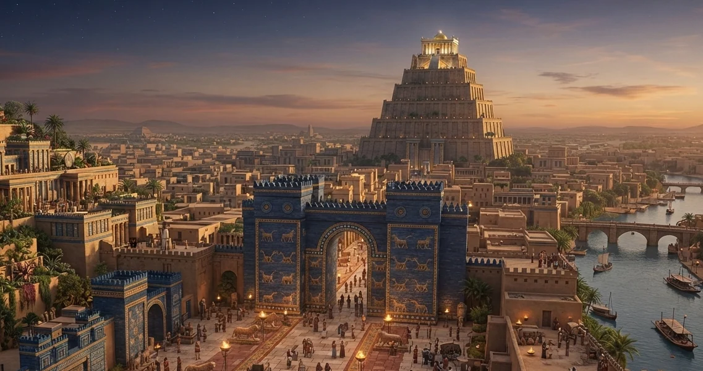

MÖ 1894 civarında küçük bir Amurru kabilesi yerleşim yeri olarak kurulan Babil, yaklaşık iki bin yıl boyunca dünyanın en büyük ve en güçlü şehirlerinden biri olarak tarihe adını yazdırdı. Bugün güney Irak'taki Hillah şehri yakınlarında bulunan harabeleri, UNESCO Dünya Mirası Listesi'nde yer alıyor; ancak şu sıralar hem iklim kaynaklı toprak tuzluluk tehdidiyle hem de 2024–2025 arkeoloji sezonunun getirdiği yeni keşiflerin heyecanıyla gündemdeki yerini korumaya devam ediyor.
Babil Nereden Geliyor? Kentin Kökeni ve Coğrafyası
"Babil" adı, Akadca Bāb-ilim — "Tanrıların Kapısı" anlamına gelir. Şehir, Fırat Nehri'nin iki yakasında kurulmuş ve nehir, kentin planlamasında merkezi bir rol oynamıştır. Eski şehrin daha geniş kısmı nehrin doğu kıyısındaydı; burada büyük Marduk tapınağı Esagila ve onun ziggurat kulesi Etemenanki yer alıyordu.
Bugünkü Bağdat'ın yaklaşık 85 kilometre güneyinde konumlanan Babil, stratejik su ulaşımı ve verimli Mezopotamya ovası sayesinde kısa sürede bir ticaret ve kültür merkezi hâline geldi. Hammurabi döneminde (MÖ 1792–1750) nüfusun 200.000'e yaklaştığı tahmin ediliyor; bu rakam dönemin dünya standartlarında olağanüstü bir büyüklüğe işaret ediyor.
Hammurabi ve İnsanlığın İlk Kapsamlı Hukuk Sistemi
Babil'i tarih sahnesine taşıyan ilk büyük isim, Amurru kökenli Kral Hammurabi'dir. MÖ 1792'de tahta çıkan Hammurabi, yaklaşık kırk iki yıllık hükümdarlığı boyunca küçük bir şehir devletini tüm Mezopotamya'yı kapsayan bir imparatorluğa dönüştürdü. Ancak onu dünya tarihinde kalıcı kılan başarı askerî değil hukukîdir: 282 maddeden oluşan Hammurabi Kanunları.
Yaklaşık 2,25 metre yüksekliğindeki siyah diyorit taş üzerine çivi yazısıyla kazınan bu kanunlar, ticaret, aile hukuku, mülkiyet, ücretler, suçlar ve cezalar gibi gündelik yaşamın pek çok alanını düzenliyordu. "Göze göz, dişe diş" ilkesiyle özdeşleşen bu metin, aslında belirli suçlar için katı eşdeğer cezalar yerine orantılı yaptırımlar öneren, sınıflar arası farklılıkları da göz önünde bulunduran oldukça ayrıntılı bir yasal çerçevedir. Kanunlar; tüccarın aldatması, doktorun malpraktisi, mimarın hatalı yapı inşası gibi günümüzde de tartışılan konuları ele alıyordu.
"Kanun taşının tepesinde Hammurabi, güneş tanrısı Şamaş'ın karşısında tasvir edilmiştir — adaletin tanrısal otoriteden beslendiğinin simgesi. Bu, yönetimin meşruiyetini dinden değil hukuktan alan ilk sistemlerin habercisidir."
Hammurabi'nin ölümünden kısa süre sonra Eski Babil İmparatorluğu dağıldı. Yaklaşık MÖ 1595'te Hitit Kralı I. Murşili Babil'i yağmaladı ve kenti neredeyse boşaltılmış bıraktı. Arkasından yaklaşık 400 yıl boyunca şehri Kassitler yönetti. Babil, bu süreçte imparatorluk başkenti statüsünü yitirdi; ama hiçbir zaman tamamen önemini kaybetmedi.
🕐 Babil Uygarlığı Zaman Çizelgesi
- MÖ ~2300: Akkad yazıtlarında Babil adı ilk kez geçiyor
- MÖ 1894: Amurlular Babil'i ele geçiriyor; Eski Babil Dönemi başlıyor
- MÖ 1792–1750: Hammurabi dönemi — 282 kanun, imparatorluk genişlemesi
- MÖ 1595: Hitit istilası; Kassit yönetimi başlıyor
- MÖ 626–539: Yeni Babil İmparatorluğu — Nabopolassar ve Nebukadnezar II
- MÖ 612: Babil ve Medler Ninova'yı yıkıyor; Asurlar tarih sahnesinden çekiliyor
- MÖ 605–562: Nebukadnezar II dönemi — İştar Kapısı, Asma Bahçeler, Kudüs'ün fethi
- MÖ 539: Büyük Kiros Babil'i fethediyor; Pers egemenliği başlıyor
- MÖ 323: İskender Büyük Babil'de hayatını kaybediyor
- MS 1899–1917: Alman arkeolog Robert Koldewey'in sistematik kazıları
- 2003–2005: ABD askerî üssü harabeye zarar veriyor; UNESCO raporu yayımlanıyor
- 2009: Alan yeniden ziyaretçilere açılıyor
- 2019: UNESCO Dünya Mirası Listesi'ne alınıyor
- 2024: Irak kazı ekibi 478 yeni eser buluyor
- Ekim 2025: Toprak tuzluluk tehdidi Irak'ın gündemine giriyor
- Aralık 2025: YZ destekli çözümlemeyle yeni Marduk ilahisi keşfediliyor
Yeni Babil İmparatorluğu: Nebukadnezar ve Altın Çağ
Babil'in gerçek altın çağı, MÖ 626'da Keldani kökenli Nabopolassar'ın iktidarı ele geçirmesiyle başladı. Nabopolassar, Med müttefikleriyle birlikte Asur'un başkenti Ninova'yı MÖ 612'de yerle bir etti. Böylece kuzeydeki rakip güç ortadan kalkmış, Babil'in önünde Pers Körfezi'nden Akdeniz kıyılarına uzanan devasa bir imparatorluk yolu açılmıştı.
Nabopolassar'ın oğlu Nebukadnezar II (MÖ 604–562), bu imparatorluğu en parlak dönemine taşıdı. Mısır'a kadar uzanan seferler düzenledi, Kudüs'ü fethetti (MÖ 586) ve Yahudi halkını Babil'e sürgüne gönderdi — bu olay İbrani kutsal metinlerinde kalıcı bir iz bıraktı ve "Babil sürgünü" olarak tarihe geçti. Askerî başarılarının yanı sıra Nebukadnezar, şehircilik tarihinin en çarpıcı yapı projelerini hayata geçirdi.
Nebukadnezar döneminde Babil, yaklaşık 10 km² alana yayılan ve dönemin dünya standartlarında en büyük şehri konumundaydı. Fırat Nehri kentin tam ortasından geçiyor, köprüler iki yakayı birleştiriyordu. Geniş cadde ağları, kanal sistemi, kamu binaları ve tapınaklar şehrin kentsel dokusu olarak birbiriyle örtüşüyordu.
İştar Kapısı: Mavi Çinilerin Ardındaki İmparatorluk
Babil'in sekizinci iç kapısı olan İştar Kapısı, MÖ 575 civarında Nebukadnezar tarafından inşa edildi. Aşk ve savaş tanrıçası İştar'a adanan bu kapı, parlak lacivert sırlı tuğlalarla kaplıydı; üzerinde altın sarısı kabartmalarla Babil'in kutsal hayvanları işlenmişti: tanrı Marduk'un sembolü olan sirrush ejderi ve fırtına tanrısı Adad'ı simgeleyen boğalar.
Kapıdan geçilince uzanan Ayin Yolu (Processional Way), dini bayramlarda tanrı heykellerinin taşındığı törensel bir güzergâhtı. Bu yolun kenarları da aynı parlak mavi tuğlalarla ve aslan kabartmalarıyla süslüydü — aslan, tanrıça İştar'ın sembolüydü.
Orijinal İştar Kapısı bugün Berlin'deki Pergamon Müzesi'ndedir. Alman arkeolog Robert Koldewey, 1899–1917 yılları arasındaki kazılarda kapıyı sökerek Avrupa'ya taşıdı. Irak'ta görülen kapı ise sonradan inşa edilmiş bir replikadır. Berlin'deki orijinal kapının tuğlaları, Nebukadnezar'ın yazdırdığı tanrı övgülerini bugün hâlâ taşımaktadır.
Babil Kulesi ve Etemenanki: Göklere Uzanan Ziggurat
"Babil Kulesi" efsanesi, muhtemelen gerçek bir yapıdan — Etemenanki zigguratından — ilham almıştır. Akadca'da "Gökyüzü ile Yeryüzü'nün Temeli Evi" anlamına gelen Etemenanki, Marduk'un baş tapınağı Esagila'nın hemen yanında yükseliyordu. Koldewey'in 1899–1917 kazıları, yapının 91 metre x 91 metre kare bir taban üzerine oturduğunu ve yedi katlı bir piramit biçiminde inşa edildiğini ortaya koydu. Toplam yüksekliğinin de 91 metre civarında olduğu tahmin ediliyor.
Nebukadnezar'ın kendi yazıtlarında Etemenanki'den "baked brick enameled in brilliant blue" olarak söz ettiği bilinmektedir. İncil'deki Babil Kulesi anlatısının bu yapıya atıfta bulunduğu yaygın kabul görmekle birlikte, bazı akademisyenler hikâyenin gerçek tarihsel olaydan çok teolojik bir metafor içerdiğini savunmaktadır.
Asma Bahçeler: Dünyanın Yedinci Harikası Gerçek miydi?
Babil Asma Bahçeleri, antik çağın Yedi Harikası arasında sayılır; ancak paradoks biçimde tek konumu kesin olarak tespit edilemeyen harikadır. Üstelik, kaleme alındığı dönemde Babil'i ziyaret ettiği bilinen Herodotos, Bahçeler'den hiç söz etmemektedir. Buna karşın MÖ 290 civarında yazan Babilonyalı rahip Berossus ve daha sonraki Yunan tarihçiler yapıyı ayrıntılı biçimde anlatmıştır.
Geleneksel anlatıya göre Nebukadnezar II, Medyalı eşi Amytis için — onun sarp ve yeşil doğa ortamını özlemesi nedeniyle — bu bahçeleri inşa ettirdi. Klasik kaynaklardaki tanımlamalara göre bahçeler, teraslı ve kademeli yükselen yapılar üzerine kuruluydu; her katın bitkilerini sulamak için Fırat Nehri'nden mekanik bir sistemle su çekiliyordu.
Bahçelerin hiç var olmadığını ya da başka bir yerde, muhtemelen Ninova'da inşa edildiğini öne süren akademisyenler de vardır. Oxford'dan Stephanie Dalley, Asur Kralı Sennacherib'in (MÖ 704–681) Ninova'daki sarayı için inşa ettirdiği belgelenmiş bahçelerin, yüzyıllar içinde Nebukadnezar'a atfedildiğini savunmaktadır. Arkeolojik kazılar sarayın kuzeydoğusunda bazı temel odaları ve tonozları ortaya çıkardıysa da kesin bir kanıt bulunamamıştır.
"Asma Bahçeler'in varlığına dair hiçbir çağdaş Babil yazıtı bulunmamıştır. Yine de Fırat'ın eski yatağının altında henüz kazılamamış bölümler, gizemi canlı tutmaya devam ediyor."
Çivi Yazısı ve Babil'in Bilimsel Mirası
Babil uygarlığı, yalnızca siyasi ve mimari büyüklüğüyle değil, insanlık tarihindeki bilimsel atılımlarıyla da ön sıralarda yer alır. Bu mirasın taşıyıcısı, kil tabletlere basılan çivi yazısıdır.
Matematik: Pisagor'dan 1.500 Yıl Önce Geometri
"Pisagor teoremi" diye bildiğimiz kavramın izleri, Pisagor'dan yaklaşık 1.500 yıl önce Babil tabletlerinde görülmektedir. Eski Babil Dönemi'ne (MÖ 1900–1600) tarihlenen bir tablet, dik üçgenlerde kenar uzunlukları arasındaki ilişkiyi matematiksel olarak ifade etmektedir. Bu, uygulamalı geometrinin bilinen en eski kanıtlarından biridir.
Daha çarpıcısı, Humboldt Üniversitesi'nden Mathieu Ossendrijver'in British Museum'da yaptığı analizdir. Bilim dergisinde yayımlanan bu çalışmada Ossendrijver, Babil astronomlarının MÖ 350–50 arasında Jüpiter'in hareketini hesaplamak için trapezoid geometrisini kullandığını ortaya koydu. Hareket ve zaman arasında grafik oluşturma yönteminin, Oxford ve Paris akademisyenlerine (MÖ 1350 civarı) ya da Newton'a değil, Babillilere ait olduğunu gösterdi. Bu yöntemin modern integrel hesabın bir öncülü olduğu kabul edilmektedir.
Astronomi: Takımyıldızlardan Ay Tutulmalarına
Babil astronomisi, bugün hâlâ modern araştırmacılar tarafından başvurulan bir arşiv niteliğindedir. Günümüzde Bağdat'ın güneybatısındaki Sippar kentinden gelen ve İngiliz Müzesi'nde saklanan kil tabletler, 2024 yılında araştırmacılar tarafından ilk kez tamamen deşifre edildi: Smithsonian dergisinin aktardığı üzere tabletler, ay tutulmalarını zamana, ay gölgesinin hareketine ve tarihe göre sınıflandıran sofistike bir kehanet sistemi içeriyordu. Bir kral öleceğine dair işaretler de dahil olmak üzere ayrıntılı tahminler bu sisteme dayanıyordu.
Babillilerin astronomi mirasının gündelik hayatımızdaki en somut izi şudur: 60 saniyelik dakika ve 60 dakikalık saat. Ondalık değil altmışlı sayı sistemini (base-60) kullanan Babil matematikçileri bu sistemi MÖ 2000'lerde geliştirdi. Bugün kullandığımız zaman ve açı ölçü sistemleri doğrudan bu Babil mirasından gelmektedir.
Ayrıca çoğu takımyıldızın adı ve konumu, Babil gözlemcileri tarafından ilk kez belirlendi ve kataloglandı. Bu bilgiler Yunan ve sonrasında İslam astronomi geleneğine aktarıldı; oradan da modern astronomi atlaslarına geçti.
🧐 Babil'den Günümüze Kalan Bilimsel Miras
- 60 saniyelik dakika, 60 dakikalık saat: Babil'in base-60 sayı sistemi
- 360 derecelik çember: Babil astronomik hesaplarından
- Pisagor teoreminin öncülü: MÖ ~1800 tarihli Babil tableti
- İntegrel hesabın ilk biçimi: MÖ 350'de Jüpiter'in hareketini hesaplama
- Takımyıldız isimleri ve koordinatları: Modern atlasların temeli
- Ay ve güneş tutulması tahminleri: Sistematik gözlem ve matematiksel modelleme
- Hukuk sistemleri: Hammurabi'nin etkisi Roma hukukuna ve oradan modern Batı hukukuna uzanır
2024–2025 Yıllarının Yeni Keşifleri
478 Eser, İki Tarihsel Katman
Irak Antikiteler ve Miras Kurumu'nun (SBAH) Quhtan Abbas Hassan Aboud liderliğinde yürüttüğü kazı çalışmaları, Babil Valiliği'ndeki Al-Fayadiya bölgesinde 2024 yılında önemli bulgular ortaya koydu. İki ayrı sektöre ayrılan kazı alanında (A ve B noktaları) toplamda 478 eser bulundu. Bunlar arasında çanak çömlek kaplar, silindirik mühürler ve çivi yazısı tabletleri öne çıktı.
A Noktası yaklaşık 6.000 m² alanı kaplıyor ve iki farklı yer döşemesi katmanına sahip. Üst katman Sasani dönemine (MS 224–651) ait olmakla birlikte büyük ölçüde aşınmıştır. Daha iyi korunmuş alt katman ise Eski Babil dönemine tarihleniyor (MÖ 1894–1595). B Noktası yaklaşık 9.000 m² alana yayılıyor ve farklı boyutlarda odaları olan iki konut birimi içeriyor; bu da yapıların gündelik Babil yaşamının bir kesitini yansıttığına işaret ediyor.
Bulunan silindirik mühürler özellikle dikkat çekici: Bu küçük, üzerinde semboller kazılı nesneler antik Mezopotamya'da mülkiyet belgesi ve resmi onay damgası işlevi görüyordu. Mühürlerin ikonografisi, Babil sanatının ve sembolizminin nasıl bir evrim geçirdiğini anlamada tarihçilere kritik veriler sunuyor.
Yapay Zekâyla Çözümlenen Marduk İlahisi — Archaeology Magazine 2025 Yılın Keşfi
Archaeology Magazine'in Ocak/Şubat 2026 sayısı, "2025'in Yılın Keşifleri" listesinde Babil'e ayrı bir başlık açtı. Ludwig Maximilian Üniversitesi'nden Asiriyolog Enrique Jiménez ve Bağdat Üniversitesi'nden Anmar Fadhil'in çalışması, daha önce hiç bilinmeyen bir Babil ilahisini gün yüzüne çıkardı. Bu ilahi, Babil'i "varoluşun ilk şehri" olarak kutluyor ve koruyucu tanrı Marduk'u yüceltiyor.
Araştırmacılar önce Irak Müzesi'ndeki bir tabletin büyük bölümünü deşifre etti. Ardından yapay zekâ modellerini kullanarak bu tabletle kesişen diğer fragmanları aradı ve 20 farklı tabletten 30 parçayı eşleştirdi. Jiménez'e göre bu süreç çivi yazısı araştırmaları için devrimsel niteliktedir: "Son 150 yılda tabletlerin birbirine eklendiği 6.000 yer bulundu. Biz son beş yılda 1.500 yer bulduk." İlahinin yaklaşık MÖ 2. binyılın ikinci yarısında yazıldığı ve toplam 250 dize içerdiği tahmin ediliyor. Şimdiye kadar üçte ikisi kurtarılmış durumda.
İlahinin en ilgi çekici özelliği, kral figürünün merkeze alınmaması. Bunun yerine şehir halkı kolektif bir özne olarak öne çıkıyor. Jiménez'e göre Babilliler ilahide "Biz herhangi bir kralptan daha eskiyiz. Krallar gelir geçer ama Babilliler hep kalır" gibi bir ifadeyle sesini yükseltiyor.
İklim Tehdidi: Toprak Tuzluluğu ve Miras Kaybı
Ekim 2025'te Irak yetkilileri, artan toprak tuzluluğunun Babil'deki yüzlerce anıta zarar verdiği konusunda uyarıda bulundu. Kuraklık nedeniyle yüzeye çıkan tuz kristalleri taş ve tuğla yüzeylerini aşındırıyor; özellikle restore edilmiş yapılar bu süreçten ciddi biçimde etkileniyor. Bu durum, 2003–2005 yıllarındaki ABD askerî üssü kaynaklı tahribata ek olarak Babil'i bekleyen yeni ve kronik bir tehdidi simgeliyor.
Babil'in Çöküşü: Pers Egemenliğinden İskender'e
Yeni Babil İmparatorluğu'nun son hükümdarı Nabonidus (MÖ 556–539), halk arasında sevilen tanrı Marduk yerine Ay tanrısı Sin'i ön plana çıkararak din adamları ve halkla ciddi bir gerilim yaşadı. Bu siyasi zayıflıktan yararlanan Pers Kralı Büyük Kiros, MÖ 539'da şehre büyük bir dirençle karşılaşmadan girdi. Babil halkının bir bölümü Kiros'u kurtarıcı olarak karşıladı.
British Museum'daki ünlü "Kiros Silindiri", Pers hükümdarının şehirdeki tanrı heykellerini iade ettiğini, sürgün halkları — Yahudiler dahil — yurtlarına gönderdiğini ve zorla çalıştırmayı yasakladığını aktarır. Bazı tarihçiler bu belgeyi "tarihte ilk insan hakları bildirgesi" olarak yorumlamıştır; ancak bu yaklaşım tartışmalıdır ve silindir ağırlıklı olarak bir Pers propaganda metnidir.
Pers egemenliği altında Babil, 9. Satraplığın başkenti oldu ve önemli bir öğrenim merkezi olmayı sürdürdü. Ardından, MÖ 331'de İskender Büyük kenti fethetti. İskender, Babil'i yeniden doğunun başkenti yapmayı planladı ve Etemenanki zigguratını onarma projelerine girişti. Ancak MÖ 323'te Babil'de hayatını kaybedince bu planlar gerçekleşemedi. İskender'in ölümünün ardından şehir, Seleukos egemenliğine geçti ve Helenistik dönemde giderek önemini yitirdi. Yeni Seleukia başkentinin kurulması nüfusu buraya çekti; Babil yüzyıllar içinde sessizce terk edildi.
Sonuç: Babil'in Ölümsüz Mirası
Babil, çökmüş bir uygarlığın harabeleri değil; insanlığın en derin kök salmış düşünce sistemlerinden birinin cisimleşmiş hâlidir. Hukuku insan yaşamının merkeline taşıyan ilk kapsamlı yasa kodu, gökleri matematiksel kesinlikle izleyen rahip astronomlar, altmışlı sayı sistemiyle zaman ve açıyı şekillendiren matematikçiler, mavi çinili kapısı Berlin'de, replikası Irak'ta duran görkemli kent planlaması — bunların tamamı, Babil'in yalnızca antik bir başkent değil, modern uygarlığın görünmez bir temeli olduğunu göstermektedir.
2024 kazılarının ortaya çıkardığı 478 eser, 2025'te yapay zekâ destekli çözümlemeyle gün yüzüne çıkan Marduk ilahisi ve devam eden koruma çalışmaları — tüm bunlar, Babil'in hâlâ söylenmemiş sözleri olduğuna işaret etmektedir. Çivi yazısıyla kil tabletlere basılan bu sözler, aradan geçen binlerce yılı silerek bugünkü araştırmacılara konuşmayı sürdürüyor.
📚 Bu Yazıda Başvurulan Kaynaklar
- Archaeology Magazine (Ocak/Şubat 2026). Top 10 Discoveries of 2025 — Hymn to Babylon. archaeology.org
- World Atlas (Aralık 2025). 5 Strange Discoveries About the Ruins of Babylon. worldatlas.com
- Archaeology News Online Magazine (2024). Excavation in ancient Babylon uncovers 478 artifacts. archaeologymag.com
- Britannica (2025). Babylon — The Ancient City; Hanging Gardens of Babylon. britannica.com
- Wikipedia (2026). Babylon; Hanging Gardens of Babylon; Code of Hammurabi. wikipedia.org
- Physics World (2022/güncel). Babylonian astronomers used abstract geometry to track Jupiter. physicsworld.com
- Smithsonian Magazine (2024). Newly Deciphered 4,000-Year-Old Cuneiform Tablets Used Lunar Eclipses to Predict Major Events.
- HISTORY.com (2025). Babylon: Hanging Gardens & Tower of Babel. history.com
- Ancient Origins (2024). Excavation Uncovers New Secrets in Ancient Babylon. ancient-origins.net
- Scientific American. Babylonians Tracked Jupiter with Fancy Math, Tablet Reveals. scientificamerican.com
- Live Science. Ancient Babylon, the iconic Mesopotamian city that survived for 2,000 years. livescience.com
- Ossendrijver, M. (2016). Ancient Babylonian astronomers calculated Jupiter's position from the area under a time-velocity graph. Science, 351(6272).